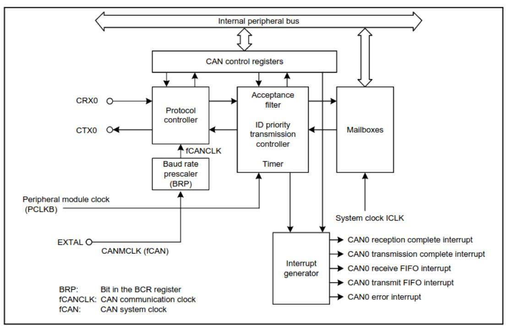
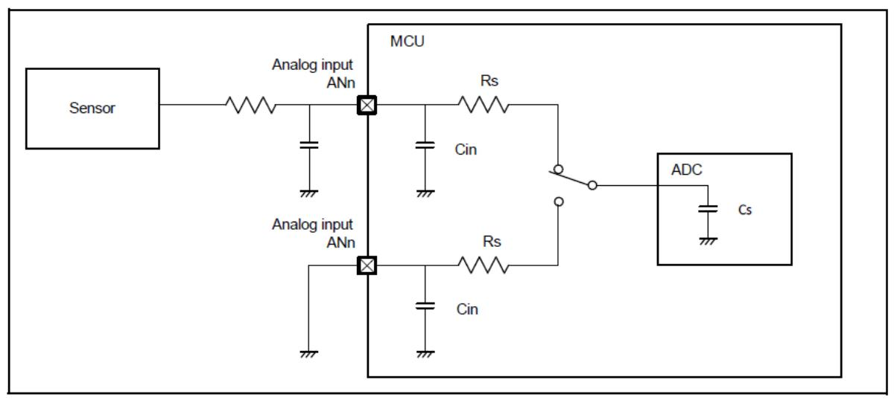

Smart Battery System¶
TODO List¶
Convert text description of behavioral flowchart to a diagram/picture
Determine what resistors to use for voltage diff amps
Determine if ideal diode FETs are same as those in the high-current FET array
Map MCU pins to board functions
Determine if MCU GPIOs go high impedance when MCU goes to sleep
a.If yes, configure pull-up/down resistors on control signals for sleep state
Look for cell voltage measurement amps for 12S levels
See if anything else is incompatible
Will need to move shunt to low-side measurement
Don’t limit to parts with a shutdown pin
Determine resistor divide ratios for VOUT_DIVIDED and VSTACK_DIVIDED
Add zener clamps to these as well
Determine if cell voltage diff amps should use Vref=1.3V resistor ratios or if Vref=1.6 is ok
Add pull-ups to I2C if needed
Measure the average power consumption of the SBS write that into the MCU ROM
Requirements¶
-
Battery CANBUS & Balance connector
CANBUS and I2C connections
Must be opto-isolated because, when stacking multiple 6S SBS, each module’s “ground” is not 0 V to the Cube, but a sum of all the battery stack voltages below it
CAN must be capable of 5 Mbps (future systems may use high-speed CAN FD) ( CA N in Automation (CiA) )
Cell voltages (C_n) feed directly to the battery charger
These shall function if no component is populated on the SBS PCB
The 6S SBS uses only C_1 through C_6, so C_7 through C_12 are “no connects”
Detect_OUT and Detect_IN will be connected by the Host
The Host is responsible for connecting the cells, CAN, I2C, 5V, GND, and Detect pins properly
Battery High Current
The load capacitance may be estimated to be a maximum of 6000 uF
Shall contain a separate header on the PCB for UART debugging
Shall measure each cell voltage and the entire stack voltage
Shall measure the battery current in the range [-190, 190] A
Needs higher precision at smaller currents [-1, 1] A because it can spend a long time supplying a small currents
Shall measure the voltage on the output terminals
Determines whether connected to charger
Shall provide an ideal diode setup for low current (drone on ground) setups to allow for hotswapping battery stacks
The ideal diode setup shall enable inrush control and load switching
Shall be able to enforce a maximum current through the ideal diode 10 A (the limit is configurable by the firmware - use the current amplifiers and compare to a constant)
Shall limit the inrush current to 10 A (same as max current listed above)
Shall allow for regenerative braking (reverse current to charge batteries) while drone in flight
Shall contain a NTC thermistor for temperature measurement/reporting by software
Shall contain a piezo
Low battery warning
Shall contain a RGB LED for SoC indication
If easy enough, have several DNP LEDs in a row for indicating SoC (more intuitive)
Shall read a resistance across Detect_OUT ↔︎ Detect_IN to indicate operation modes
Resistance 0 (short) means connected to charger
Resistance 4.7k means connected to 12S drone
Resistance 2.2k means connected to 6S drone
Open means nothing is connected
Software Notes¶
e^2 studio: e² studio
Install Synergy Software Package Renesas Synergy™ Software Package (SSP)
DK-S128 S128 Development Kit
High-level overview
Detailed description
Board design data (we have rev. 2)
MCU Notes¶
Pin Mappings¶
Can probably simplify the shutdown/enable signals, but leaving this open as a placeholder
Place Detect_OUT driver and Detect_IN resistor divider reading close together
P i n T y p e |
S i g n a l |
Port |
Notes |
|---|---|---|---|
A D C |
A N 0 0 0 A N 0 1 3 A N 0 1 6 A N 0 2 2 |
P000P 004,P010P015,P5 00P502,P100P106 |
“PinsAN000toAN013cannotbe usedasgeneralI/O,IRQ2input,orforTStransmissi onwhentheA/Dconverterisinuse.”(S128Datasheet Table2.48)Therefore,pinswiththefunctionsAN00 0AN013shallbeselectedforADCinputsAN016AN022. |
G P I O |
a |
P000 P004,P010P015,P 100P113,P201,P2 04P206,P212P213 ,P300P304,P400P 403,P407P411,P5 00P502,P914P915 |
|
G P I |
P200,P214P215 |
||
I R Q |
I R Q 0 I R Q 7 |
T y p e |
Function |
Q u a n t i t y |
Pin(s)MCU |
|---|---|---|---|
A D C |
Shu ntamplifi erreading |
4 |
I_FORWARD_HIGHRANGE: AN003(P003)I_FORWARD_LOWRANGE:AN002(P002)I_REVERSE_ HIGHRANGE:AN001(P001)I_REVERSE_LOWRANGE:AN000(P000) |
A D C |
Cellvolta gereading |
6 |
MCU_VCELL6:AN012(P501)MCU_VCEL L5:AN011(P502)MCU_VCELL4:AN010(P015)MCU_VCELL3:AN00 9(P014)MCU_VCELL2:AN008(P013)MCU_VCELL1:AN007(P012) |
A D C |
Thermist orreading |
1 |
VTHERM:AN017(P105) |
A D C |
Dete ct_INresi stordivid erreading |
1 |
Detect_IN:AN016(P106) |
A D C |
V OUT_DIVID EDreading |
1 |
VOUT_DIVIDED:AN004(P004) |
A D C |
VST ACK_DIVID EDreading |
1 |
VSTACK_DIVIDED:AN013(P500) |
S e r i a l |
CAN0 |
1 |
SBS _CAN_RX:CRX0_C(P102)(46)SBS_CAN_TX:CTX0_C(P103)(45) |
S e r i a l |
I2C1 |
1 |
SBS_I 2C_SDA:SDA1_B(P101)(47)SBS_I2C_SCL:SCL1_B(P100)(48) |
S e r i a l |
UART |
1 |
SBS_U ART_RX:RXD9_B(P110)(35)SBS_UART_TX:TXD9_B(P109)(34) |
S e r i a l |
JTAG( programmi ng/debug) |
1 |
SWCLK:SWCLK(P300)(32)SWDIO:SWDIO(P108)(33) |
G P I O |
RGBLED |
3 |
RGB_BL UE:(P302)(30)RGB_RED:(P303)(29)RGB_GREEN:(P304)(28) |
G P I O |
Piezo |
1 |
PIEZO:(P206)(22) |
|---|---|---|---|
G P I O |
SHDN_C ELL_VMEASURE(activehigh) |
1 |
SHDN_ CELL_VMEASURE:(P104)(44) |
G P I O |
EN_C URRENT_SENSE(activehigh) |
1 |
EN _CURRENT_SENSE:(P401)(2) |
G P I O |
EN _IDEAL_DIODE(activehigh) |
1 |
E N_IDEAL_DIODE:(P113)(38) |
G P I O |
EN_FET_ARRAY(activehigh) |
1 |
EN_FET_ARRAY:(P111)(36) |
G P I O |
~{SHDN_FET_ ARRAY_DRIVER}(activelow) |
1 |
~{SHDN_FET_ ARRAY_DRIVER}:(P112)(36) |
G P I O |
D ebug/state-of-chargeLEDs |
min4,max8 |
nomapping |
G P I O |
Detect_OUTdriver |
1 |
Detect_OUT:(P107)(41) |
CAN Communication¶
Hardware design recommendations - UAVCAN

Analog Voltages / ADC¶
Maximum pin voltages
Parameter |
Symbol |
Value |
U n i t |
|
|---|---|---|---|---|
Power supply voltage |
VCC |
-0.5 to +6.5 |
V |
|
Input voltage |
5 V tolerant ports*1 |
V in |
-0.3 to +6.5 |
V |
P000 to P004P010 to P015P500 to P502 |
V in |
-0.3 to AVCC0 + 0.3 |
V |
|
Others |
V in |
-0.3 to VCC + 0.3 |
V |
|
Reference power supply v |
voltage |
VREFH0 |
-0.3 to +6.5 |
V |
Analog power supply volta |
age |
AVCC0 |
-0.5 to +6.5 |
V |
USB power supply voltage |
9 |
VCC_USB |
-0.5 to +6.5 |
V |
VCC_ USB_LDO |
-0.5 to +6.5 |
V |
||
Analog input voltage |
When AN000 to AN013 are used |
V AN |
-0.3 to AVCC0 + 0.3 |
V |
When AN016 to AN022 are used |
-0.3 to VCC + 0.3 |
V |
||
Operating t emperature*2 |
3 |
T opr |
-40 to +85-40 to +105 |
° C |
Storage temperature |
T stg |
-55 to +125 |
° C |
Consulting the S128 User Manual section 1.7 (Pin Lists) shows the ports related to AVCC0 are ADC inputs AN000 through AN013
AN016..AN022 are tolerant of voltages up to VCC
Reference voltages
Internal reference
Parameter |
M i n |
Т у р |
M a x |
U n i t |
Test c onditions |
|---|---|---|---|---|---|
Internal reference voltage inputchannel* 2 |
3 6 |
4 3 |
5 0 |
V |
|
Frequency*3 |
1 |
2 |
M H z |
||
Sampling time*4 |
0 |
μ s |
S128 User Manual Table 46.49¶
Internal reference experiment
Variation in internal reference may be more subject to temperature and AVCC0 than random noise
E xternal |
r eferences |
arean |
option( |
A VCC0 |
a nd |
V REFH0 |
) |
|---|---|---|---|---|---|---|---|
Analog power supply voltages |
AV CC01, 2 |
6 |
5.5 |
V |
||
|---|---|---|---|---|---|---|
AVSS0 |
0 |
V |
||||
VREFH0 |
When used as |
6 |
AV CC0 |
V |
||
VREFL0 |
ADC14 Reference |
0 |
V |
S128 Datasheet Table 2.2 (Recommended operating conditions : min, typ, max, unit)
AVCC0 is the analog block supply rail
Refer to the SBS Design “Analog Power” section for the value
VREFH0 is an optional high-side external reference can be supplied in case the internal reference isn’t accurate enough
This voltage cannot go below 1.6 V, so supplying a ‘more stable 1.45 V’ is unfortunately not an option
Modeling ADC inputs

Figure 2.62 from MCU Datasheet
Parameter |
M i n |
Т у р |
Max |
U n i t |
Test Conditions |
|
|---|---|---|---|---|---|---|
Frequency |
1 |
64 |
M H z |
|||
Analog input capacitance*2 |
C s |
8 (reference data) |
p F |
High-precision channel |
||
9 (reference data) |
p F |
Normal-precision channel |
||||
Analog input resistance |
R s |
2.5 (reference data) |
k Ω |
High-precision channel |
||
6.7 (reference data) |
k Ω |
Normal-precision channel |
||||
Analog input voltage range |
A i n |
0 |
VREFH0 |
۷ |
Table 2.41 from MCU Datasheet
Parameter |
Sym bol |
M i n |
Т у р |
M a x |
U n i t |
Test conditions |
|
|---|---|---|---|---|---|---|---|
Input leakage current |
RES, Ports P200, P214, P215 |
I in |
0 |
μ Α |
V in = 0 VV in = VCC |
||
Three-state l eakagecurrent (off state) |
5V-tolerant ports |
I TSI |
0 |
μ Α |
V in = 0 VV in = 5.8 V |
||
Other ports |
0 |
V in = 0 VV in = VCC |
|||||
Input pull-up resistor |
All ports(except for P200, P214, P215,P914, P915) |
R U |
1 0 |
2 0 |
5 0 |
k Ω |
V in = 0 V |
Input capacitance |
USB_DP, USB_DM, P200 |
C in |
3 0 |
p F |
V in = 0 V |
||
Other input pins |
1 5 |
f = 1 MHzT a = 25°C |
Table 2.10 from MCU Datasheet
Low Power Modes¶
There are two dimensions to low power functions:
Low power mode (Sleep, Software Standby, and Snooze modes)
Power control modes (clock speeds like High-speed, Middle-speed, Low-speed, Low-voltage, and Subosc-speed)
The use of XCIN/XCOUT’s 32.768 kHz oscillator enables current draws in the uA in both Normal mode and Sleep mode (S128 Datasheet Table 2.11 (Operating and standby current)).
Concerning the states of I/O ports during sleep, the S128 User Manual Table 10.2 (Operating conditions of each low power mode) specifies:
T a b l e 1 |
10.2 Operating conditions of |
each low power mode (1 |
of 2) |
|
|---|---|---|---|---|
P a r a m |
eter |
Sleep mode |
Sof tware St andby mode |
S n o o z e m o d e * 1 |
O P o |
rts |
Operating |
Ret ained |
O p e r a t i n g |
N o t e : |
Selectable means that operating or nStop (Retained) means that the controlOperation prohibited means that theOtherwise, proper operation is not ou |
ents of the internal registers and function must be stopped before |
re ret ained but the opera tions |
This means pull-up/pull-down resistors are not required to enforce default states when the MCU is asleep.